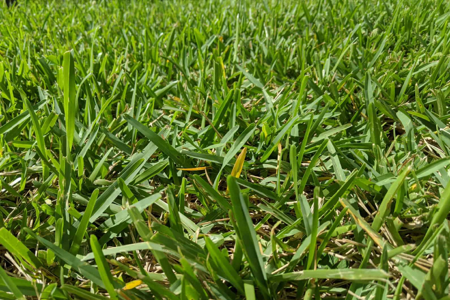
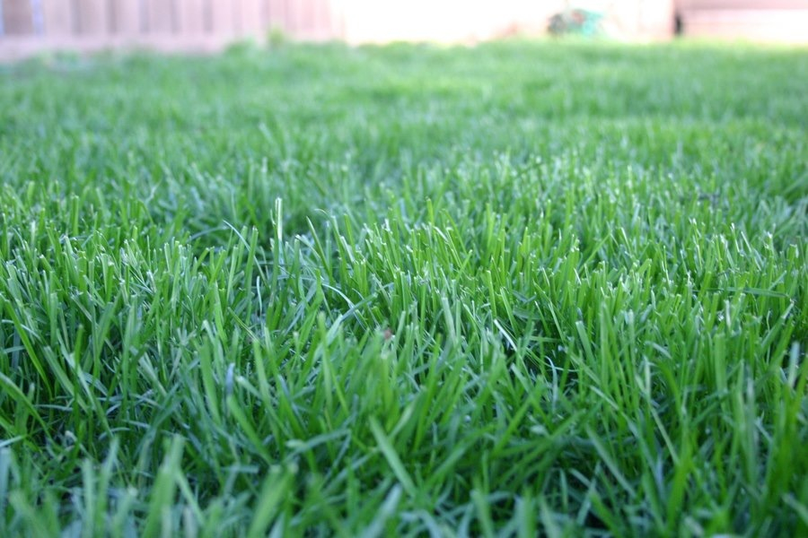
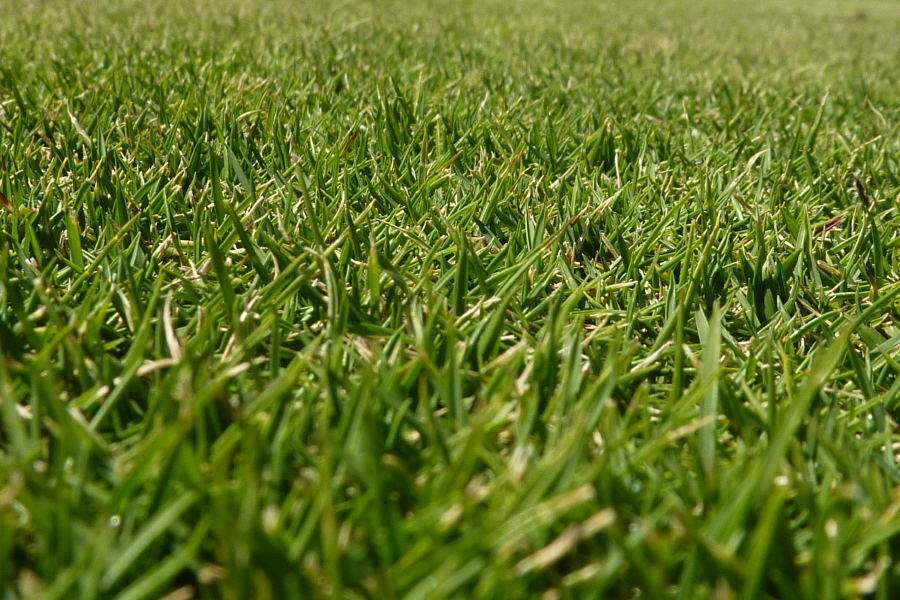

Bermuda grass is valued for its exceptional heat and drought tolerance and a capacity to withstand heavy use and recuperate quickly. This combination of qualities leads many U.S. lawn owners to rely on Bermudagrass for its resilience.

Floratam St. Augustine
$2090/pallet
Like most St. Augustine grasses, Floratam is coarse-textured grass, but a distinguishing feature of Floratam is its longer and wider leaf blades. This dark-green cultivar grows rapidly in both spring and summer.

Kentucky Bluegrass
$2111/pallet
For many lawn owners in the United States, Bluegrass is synonymous with the ideal lawn. When given its preferred growing conditions and proper care, this grass produces a dense, lush, durable lawn that lives up to its reputation.

Zoysia
$2399/pallet
Zoysia grass is known for its ability to heat, drought, heavy foot traffic and a variety of other challenges. In its optimal growing zones, this tough grass can deliver a beautiful, dense lawn with very little input from you.